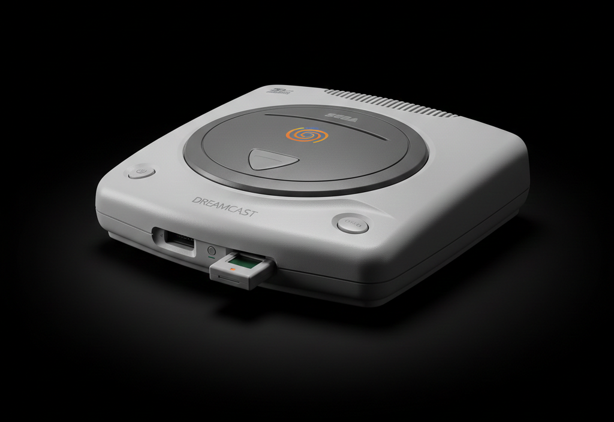

The Future That Arrived Early
After the failure of the Saturn, Sega poured everything into the Dreamcast. It launched in North America on September 9, 1999—becoming one of the most successful launch days in retail history.

A Legend Reborn
Online Pioneer
Built-in Modem
The first console to include a built-in 56k modem for online play. Games like Phantasy Star Online changed the landscape of console gaming forever.
The Peak
Arcade Perfect Experiences
From arcade ports like Crazy Taxi to the open-world epic Shenmue and stylish cult classics like Jet Set Radio, it was the home of experimental software.
The Demise
The Sony Juggernaut
Despite its brilliance, it faced the unstoppable PS2 hype. In January 2001, Sega made the shock announcement to exit the hardware business forever.
Did You Know?
Because the system doesn't require security chips for self-booting discs, a dedicated homebrew scene still releases new indie games for the Dreamcast today!